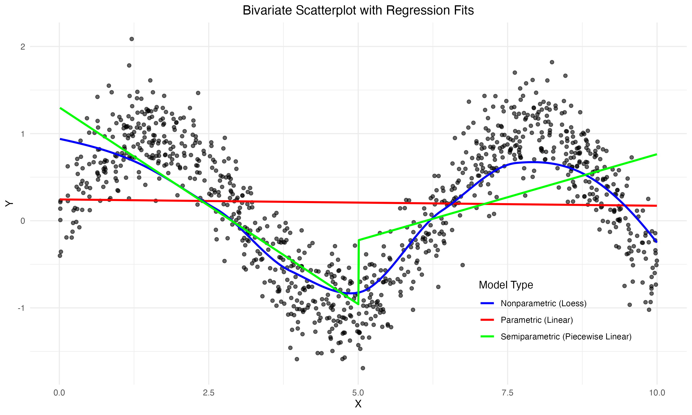

The Three Classes of Statistical Models
Background
Statistical modeling is among the most exciting elements of working with data. When mentoring junior data scientists, I never fail to see the spark in their eyes when our projects have overcome the data gathering and cleaning stages and have reached that precious Rubicon.
A major goal in the craft of statistical modeling is extracting the most information from the data at hand. Statisticians and econometricians call this efficiency or precision. In simple terms, this means achieving the lowest possible variance from a class of available estimators. As an example, imagine two findings—both centered at \(3\%\) (e.g., the treatment effect of an intervention of interest)—but one with a \(95\%\) confidence interval of \([2\%, 4\%]\), and the other with \([-7\%, 13\%]\). The former is clearly more informative and useful than the latter.
In a series of four articles, I will dive deeper into the topic of efficiency with a varying degree of detail and complexity. As a first step in this exploration, I want to demystify the distinction between the three classes of statistcal models: parametric, semiparametric, and nonparametric. The goal of this article is to explore in depth the concepts of parameterizing a model and the distinctions between these three groups.
A Closer Look
Parametric Models
Parametric models impose strong assumptions about the underlying data-generating process, making them less flexible but highly interpretable and data-efficient. They require fewer data points to estimate the target accurately compared to semiparametric or nonparametric models. Consequently, they are often the default choice in practice.
A classic example is density estimation. Suppose you observe that your data appears symmetric around its mean. You might assume the data follows a normal (Gaussian) distribution. In this case, specifying the mean \(\mu\) and variance \(\sigma^2\) fully characterizes the distribution, allowing you to estimate the density parametrically. And then, you can make all kinds of calculations related to your variable, such as what is the probability that it will take values greater than a given number \(c\).
Formally, a parametric model describes the data-generating process entirely using a finite-dimensional parameter vector. As yet another example, in the omnipresent linear model:
\[Y = X\beta + \epsilon,\]
the parameter specifies the entire relationship between \(X\) and \(Y\). This imposes a strong assumption: the relationship is linear, meaning a unit change in \(X\) consistently results in a \(\beta\) change in \(Y\), regardless of \(X\)’s magnitude (small or large). While convenient, this assumption may not hold in all practical scenarios, as real-world relationships often are complex and deviate from linearity.
Semiparametric Models
Semiparametric models combine the structure of parametric models with the flexibility of nonparametric methods. They specify certain aspects of the data-generating process parametrically while leaving other aspects unspecified or modeled flexibly.
Consider the partially linear model:
\[Y = X \beta + g(Z) + \epsilon,\]
where \(\beta\) is a parametric component describing the linear effect of \(X\), while \(g(Z)\) is an unknown and potentially complex function capturing the nonparametric effect of a covariate matrix \(Z\). Here, the model imposes linearity on \(X\)’s effect but allows \(Z\)’s effect to be fully flexible.
Semiparametric models are highly versatile, balancing the interpretability of parametric models with the adaptability of nonparametric ones. However, estimating \(\beta\) efficiently while accounting for the unknown \(g(Z)\) poses challenges, often requiring further assumptions.
In practice, semiparametric models play a crucial role in causal inference, particularly when working with observational cross-sectional data (see Imbens and Rubin 2015). A common strategy involves estimating propensity scores using parametric models (like logistic regression) and then employing nonparametric techniques such as kernel weighting, matching, or stratification to estimate treatment effects. This hybrid approach helps address confounding while maintaining computational tractability and interpretability.
Nonparametric Models
Nonparametric models make minimal assumptions about the underlying data-generating process, allowing the data to “speak for itself”. Unlike parametric and semiparametric models, these ones do not specify a finite-dimensional parameter vector or impose rigid structural assumptions. This flexibility makes them highly robust to model misspecification but often requires larger datasets to achieve accurate estimates.
Let’s get back to the density estimation example. Histograms are a form of nonparametric models as they do not assume specific underlying functional form. Instead of fitting a parametric distribution (e.g., normal), you might use a kernel density estimator:
\[\hat{f}(x)=\frac{1}{nh}\sum_i K \left( \frac{x-X_i}{h} \right),\]
where \(K(\cdot)\) is a kernel function, and \(h\) is a bandwidth parameter controlling the smoothness of the estimate. А kernel function assigns varying weight to observations around a data point. They are non-negative, symmetric around zero, and sum to one. Commonly employed kernel functions include:
- Gaussian \(K(\cdot)=\frac{1}{\sqrt{2 \pi}}e^{-0.5x^2}\),
- Epanechnikov \(K(\cdot)=\frac{3}{4}(1-x^2)\),
- Rectangular: \(K(\cdot)=0.5\).
This approach does not rely on assumptions about the data’s shape, allowing it to adapt to various distributions.
Nonparametric regression provides another illustration. In it, the relationship between \(X\) and \(Y\) is modeled as:
\[Y=m(X)+\epsilon,\]
where \(m(X)\) is an unknown function estimated directly from the data using methods like local polynomial regression, splines. Unlike the linearity assumption in parametric models, nonparametric regression allows \(m(X)\) to capture complex, nonlinear relationships. A commonly used variant of this is LOESS regression often overlayed in bivariate scatterplots.
Many popular machine learning (ML) methods are also nonparametric. In this context it is important to distinguis between parameters which impose assumptions on the data and hyperparameters which serve to tune the algorithm. Tree-based techniques exemplify the nonparametric nature of ML: gradient boosting machines, random forests, and individual decision trees can all grow more complex as they encounter more data, creating flexible models that capture intricate patterns. Think even of unsupervised clustering models including \(k\)-means and hierarchical clustering.
While nonparametric models are powerful, their flexibility comes at a cost: they can overfit small datasets and often require careful tuning (e.g., choosing the kernel bandwidth) to balance bias and variance. Nonetheless, they are invaluable for exploratory analysis and applications where minimal assumptions are desired.
Did I also mention the curse of dimensionality?! You will quickly fall into its trap with even moderate number of variables. Yes, there is just so much you can do without adding some structure to your models.
An Example
We illustrate the distinctions between parametric, semiparametric, and nonparametric models using a toy example. We generate \(1,000\) observations of
\[Y=sin(X)+\epsilon,\]
where \(X\) is uniformly distributed and is normally distributed noise. We then model the relationship between \(Y\) and \(X\) using three approaches.
# clear workspace and load libraries
rm(list=ls())
set.seed(1988)
library(ggplot2)
library(dplyr)
x <- runif(1000, 0, 10) # Uniformly distributed x
y <- sin(x) + rnorm(1000, mean = 0, sd = 0.3) # Non-linear relationship with noise
data <- data.frame(x = x, y = y)
# Fit models
linear_model <- lm(y ~ x, data = data)
loess_model <- loess(y ~ x, data = data, span = 0.3)
# Piecewise linear model
split_point <- median(data$x)
data <- data %>%
mutate(split_group = ifelse(x <= split_point, "first_half", "second_half"))
linear1 <- lm(y ~ x, data = filter(data, split_group == "first_half"))
linear2 <- lm(y ~ x, data = filter(data, split_group == "second_half"))
# Predictions
data <- data %>%
mutate(pred_linear = predict(linear_model, newdata = data),
pred_loess = predict(loess_model, newdata = data))
piecewise_preds <- bind_rows(
data.frame(x = filter(data, split_group == "first_half")$x,
y = predict(linear1, newdata = filter(data, split_group == "first_half"))),
data.frame(x = filter(data, split_group == "second_half")$x,
y = predict(linear2, newdata = filter(data, split_group == "second_half")))
) %>%
arrange(x)
# Plot
ggplot(data, aes(x = x, y = y)) +
geom_point(alpha = 0.6) +
geom_line(aes(y = pred_linear, color = "Parametric (Linear)"), linewidth = 1) +
geom_line(aes(y = pred_loess, color = "Nonparametric (Loess)"), linewidth = 1) +
geom_line(data = piecewise_preds, aes(x = x, y = y, color = "Semiparametric (Piecewise Linear)"), linewidth = 1) +
scale_color_manual(values = c("Parametric (Linear)" = "red",
"Nonparametric (Loess)" = "blue",
"Semiparametric (Piecewise Linear)" = "green")) +
labs(title = "Bivariate Scatterplot with Regression Fits",
x = "X", y = "Y", color = "Model Type") +
theme_minimal() +
theme(plot.title = element_text(hjust = 0.5),
legend.position = c(0.8, 0.2))import numpy as np
import pandas as pd
import matplotlib.pyplot as plt
import seaborn as sns
from sklearn.linear_model import LinearRegression
from statsmodels.nonparametric.smoothers_lowess import lowess
np.random.seed(1988)
x = np.random.uniform(0, 10, 1000)
y = np.sin(x) + np.random.normal(0, 0.3, 1000)
data = pd.DataFrame({'x': x, 'y': y})
# Linear model
linear_model = LinearRegression()
linear_model.fit(data[['x']], data['y'])
data['pred_linear'] = linear_model.predict(data[['x']])
# Loess model
loess_result = lowess(data['y'], data['x'], frac=0.3, return_sorted=True)
data['pred_loess'] = np.interp(data['x'], loess_result[:, 0], loess_result[:, 1])
# Piecewise linear
split_point = np.median(data['x'])
data['split_group'] = np.where(data['x'] <= split_point, 'first_half', 'second_half')
first_half = data[data['split_group'] == 'first_half'].copy()
second_half = data[data['split_group'] == 'second_half'].copy()
linear1 = LinearRegression()
linear1.fit(first_half[['x']], first_half['y'])
first_half['pred_piecewise'] = linear1.predict(first_half[['x']])
linear2 = LinearRegression()
linear2.fit(second_half[['x']], second_half['y'])
second_half['pred_piecewise'] = linear2.predict(second_half[['x']])
piecewise_preds = pd.concat([first_half[['x', 'pred_piecewise']],
second_half[['x', 'pred_piecewise']]]).sort_values('x')
# Plot
plt.figure(figsize=(10, 6))
sns.scatterplot(x='x', y='y', data=data, alpha=0.6, label='Data')
plt.plot(data.sort_values('x')['x'], data.sort_values('x')['pred_linear'], color='red', label='Parametric (Linear)', linewidth=1)
plt.plot(data.sort_values('x')['x'], data.sort_values('x')['pred_loess'], color='blue', label='Nonparametric (Loess)', linewidth=1)
plt.plot(piecewise_preds['x'], piecewise_preds['pred_piecewise'], color='green', label='Semiparametric (Piecewise Linear)', linewidth=1)
plt.title('Bivariate Scatterplot with Regression Fits', fontsize=14)
plt.xlabel('X', fontsize=12)
plt.ylabel('Y', fontsize=12)
plt.legend(title='Model Type', loc='lower right')
plt.grid(True)
plt.show()A parametric model, such as linear regression (although it could also be quadratic or a higher order polynomial), provides a simple, interpretable approximation but may miss crucial aspects of the true relationship. A “semiparametric” model, like piecewise linear regression, offers greater flexibility by allowing for changes in slope, capturing some curvature while maintaining a degree of interpretability. (One can cast this piecewise linear model as a parametric one, but for simplicity’s sake let’s go with this uncommon and imprecise definition of semiparametric.) Finally, a nonparametric model, such as LOESS, provides the most flexible representation, closely following the underlying sinusoidal pattern but potentially leading to overfitting.

You should not be surprised. This example demonstrates how the choice of model class significantly impacts the flexibility and interpretability of the fitted relationship. Do not take this example too seriously, it merely serves to illustrate the varying degree of complexity of statistical models.
Bottom Line
Parametric models impose the strongest assumptions and require the least amount of data. These are most models employed in practice. Think of linear regression.
Semiparametric models strike balance between flexibility and interpretation while allowing for flexible relationships in the data. Think of (non-Augmented) Inverse Propensity Score Weighting.
Nonparametric models are flexible and data-hungry. They allow for flexible associations between your variables. Think of a histrogram or kernel density.